A deep dive into smesouthafrica.co.za's search traffic over the last 12 months (November 2025 to October 2026): what happened, what caused it, what it was not, and how we recover.
Executive summary
Search traffic fell by three quarters. Two causes, one of them ours to fix.
Visits from Google are about 76% below their normal level: 15 400 in October 2026 against an average of 64 000 a month from January 2023 to June 2025. Over the last 12 months Google sent smesouthafrica.co.za 177 400 clicks from 20.8 million appearances in search results. The same Google data shows the monthly figure fell from 35 700 clicks in November 2025 to 9 600 in October 2026, and from a peak of 66 400 in August 2025.
−77%
Google clicks, Aug-Nov 2026 vs the same 90 days in 2025 (146 494 to 33 202)
−62%
Times Google showed our pages (11.7 million to 4.4 million)
50
articles account for half of all lost clicks; 100 account for 64%
+18%
more pages now appear in Google than a year ago (4 812 vs 4 092): we were not removed
The answer in five points
81% of the loss is lost rankings. Our biggest "business ideas", "make money" and funding articles dropped from the top of page one to page two or lower, so Google shows them far less. This is the part we can win back.
19% is fewer clicks for the same ranking. Google now answers many questions on the results page itself (AI Overviews). Even in positions 1 to 3, our click rate halved, from 6.3% to 3.0%. Every publisher is seeing this and it will not reverse.
The loss is concentrated. 50 articles hold half of it. Recovery is a focused job, not a whole-site rebuild.
It was not a penalty, a technical fault or less publishing. We appear for more searches and more pages than a year ago, and kept publishing 34 to 68 articles a month.
The decline has stopped but not reversed. The low point was June 2026 (7 500 clicks). Repairs in September lifted us back onto page one for most searches, but mostly in positions 4 to 10, where few people click.
Pulled from Google Search Console and refreshed on this page. Google's data runs two to three days behind.
Last 28 daysLoading live data…
Clicks, last 28 days
–
vs the 28 days before
–
vs the same 28 days last year
–
Daily Google clicks over the last 12 months (red), with the 7-day average (navy).
1. What happened
Twelve months in three phases
First, the long view. Between January 2023 and June 2025 Google brought us about 64 000 visits a month. In October 2026 it brought 15 400, about 76% below that normal level. The drop is real, not just a fall back from one good month.
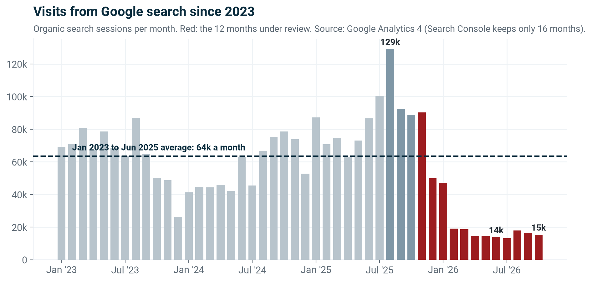
The long view. Search traffic peaked in August 2025 (129 000 visits) and fell well below its two-year normal from December 2025. Search Console only keeps 16 months of data, so this view comes from Google Analytics.
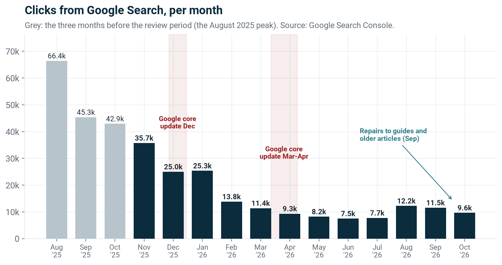
The review period is November 2025 to October 2026 (navy). August to October 2025 (grey) are shown because that is the level we fell from.
Phase
What the data shows
Clicks per month
1. Nov 2025 to Jan 2026 Fewer clicks for the same exposure
Google still showed us about 3 million times a month, but our click rate fell from 1.12% to 0.79%. Google's December 2025 core update (11 to 29 December) and the spread of AI answers in results fall in this window.
35 700 → 25 300
2. Feb to Jun 2026 Lost rankings
Exposure halved in one month (3.19 million to 1.76 million in February) as our biggest articles fell off the top of page one, and kept falling through Google's March 2026 core update (27 March to 8 April) to 0.88 million in June.
13 800 → 7 500
3. Jul to Oct 2026 Partial recovery, then a plateau
After the guides were restored and older articles repaired, exposure rose 58% to 78% from the June low and our average position improved from 21 to 13. Clicks recovered less, because the click rate kept falling (0.69% in October).
7 700 → 12 200 → 9 600
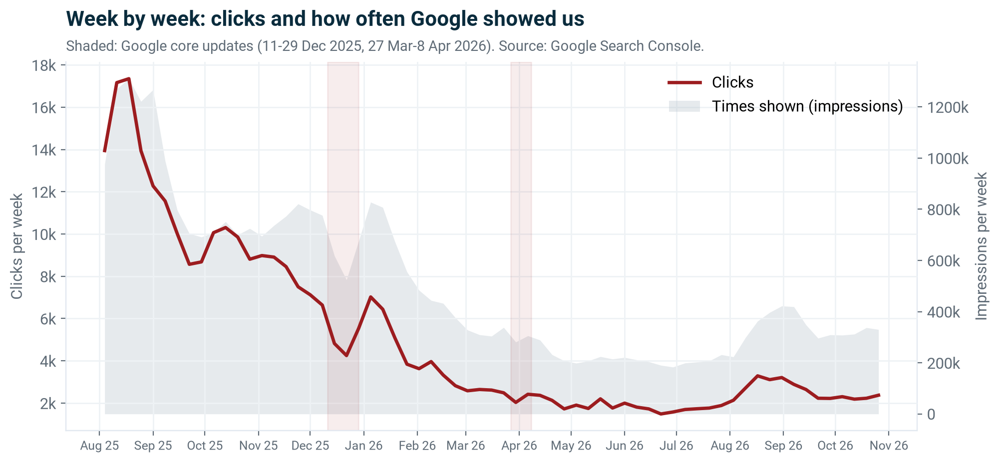
Week by week. The fall was not one event. The steepest step was late January to March 2026, when weekly exposure went from about 830 000 to 225 000. The dates of Google's updates come from Google's Search Status Dashboard as reported by the search industry press.
2. Why it happened
Splitting the loss into its two causes
Clicks equal the times Google shows us multiplied by the share of people who click. Comparing the same 90 days a year apart separates the two.
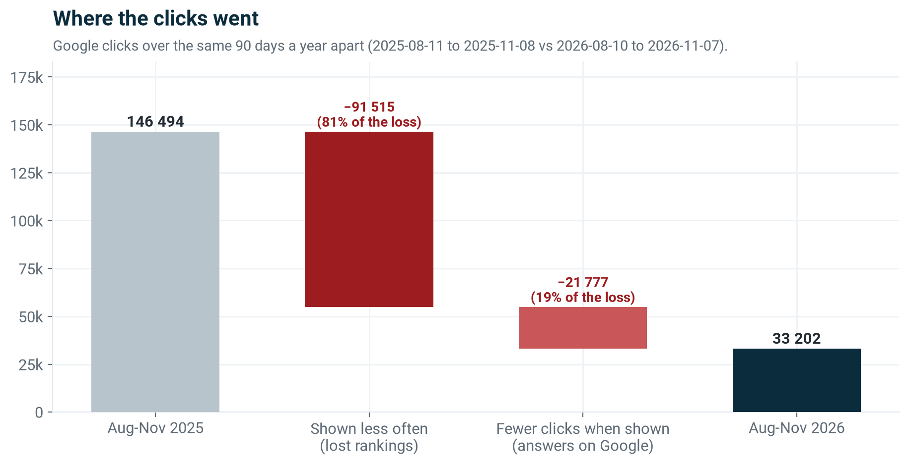
Of 113 292 lost clicks, 91 500 (81%) come from Google showing us less often, and 21 800 (19%) from fewer people clicking when we are shown.
Cause 1: our biggest articles lost their rankings (81%)
The searches that used to bring most of our traffic are broad, high-volume ones. On those, we have moved from the top of page one to page two or lower, where very few people look.
Search term
Our position, 2025
Our position, 2026
Clicks 2025 → 2026
how to make money online in south africa
5.5
27.8
1 040 → 6
business funding in south africa
4.7
32.4
181 → 0
small business ideas
3.3
41.5
156 → 0
best business to start in south africa
2.0
16.0
269 → 3
business ideas in south africa
4.0
15.0
305 → 8
Same 90 days a year apart (Aug to Nov). Position 1 is the top result; 11 and above is page two.
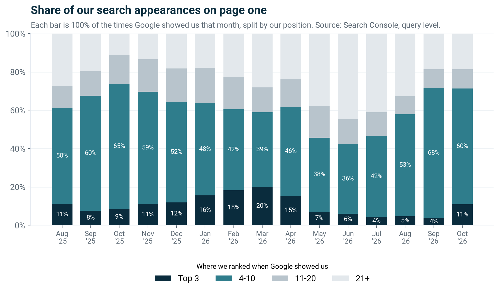
We are back on page one, but rarely in the top 3. In early 2026, 16% to 20% of our appearances were in the top 3. Since May it has been 4% to 11%. Repairs in September moved most of our appearances back onto page one (about 71% in positions 1 to 10), but mostly in positions 4 to 10, where the click rate is now under 0.5%.
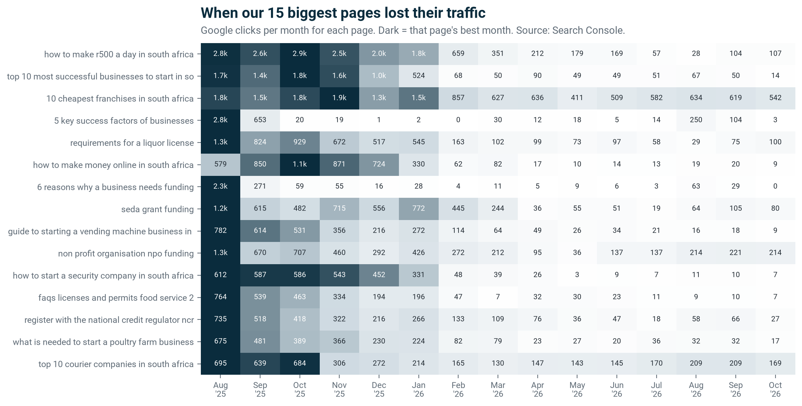
When each page fell. Most of our biggest pages held until January 2026 and collapsed in February. Two (success factors, reasons for funding) had a one-off spike in August 2025 that faded within weeks.
Cause 2: Google answers the question itself (19%)
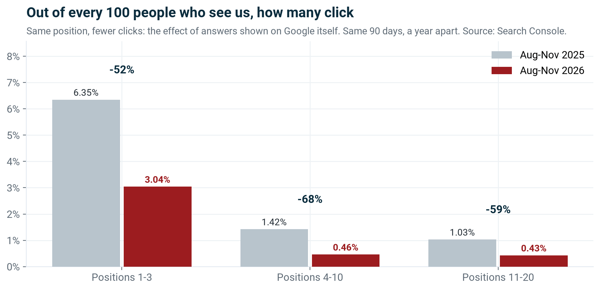
In the same position, fewer than half as many people click. In positions 1 to 3 our click rate fell from 6.3% to 3.0%; in positions 4 to 10 from 1.4% to 0.5%.
This matches the industry. Independent studies of Google's AI Overviews find the same effect: Ahrefs measured a 58% lower click rate for the top result on searches that show an AI Overview (300 000 keywords, December 2025), and Seer Interactive measured about 61%. Our fall in positions 1 to 3 (52%) sits in that range. This part of the loss is the market, not our content, and recovering rankings will not fully bring it back.
3. Where we lost
A small number of articles, in a few topics
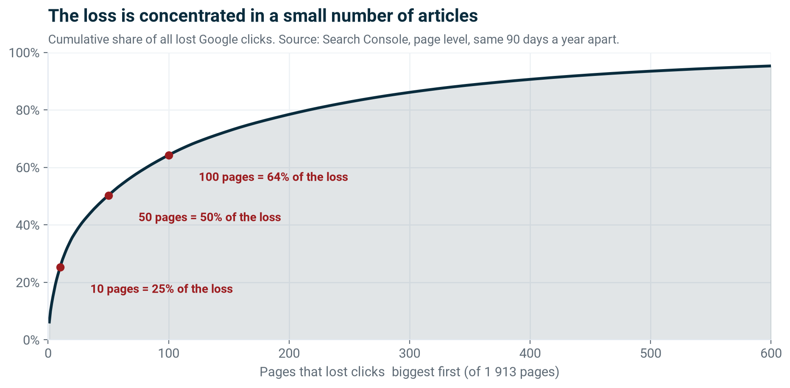
1 913 pages lost some clicks, but 10 pages account for 25% of the loss, 50 pages for 50% and 100 pages for 64%. Recovering the top 50 would win back about half of what we lost to rankings.
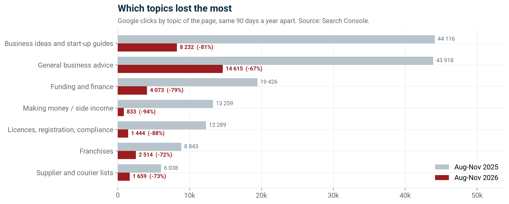
Making money (−94%), licences and compliance (−88%) and business ideas (−81%) lost the most. These are broad "how do I" searches where Google now leans hardest on AI answers and on large, official or first-hand sources.
The 15 pages that lost the most
Article
Clicks 2025
Clicks 2026
Position 2025 → 2026
How to make R500 a day in South Africa
7 981
298
8.7 → 14.6
Top 10 most successful businesses to start in South Africa
4 917
118
8.6 → 24.2
10 cheapest franchises in South Africa
5 084
1 749
16.4 → 8.4
5 key success factors of businesses
3 214
335
9.2 → 11.5
Requirements for a liquor licence
2 804
221
8.4 → 11.0
How to make money online in South Africa
2 590
48
13.0 → 30.4
6 reasons why a business needs funding
2 246
79
14.0 → 12.3
SEDA grant funding
2 200
267
8.7 → 16.5
Guide to starting a vending machine business
1 826
45
8.1 → 10.5
Non-profit organisation (NPO) funding
2 416
637
24.9 → 11.8
How to start a security company in South Africa
1 735
25
17.1 → 11.5
FAQs: licences and permits for food service
1 607
25
12.1 → 18.7
Register with the National Credit Regulator (NCR)
1 506
151
8.9 → 10.4
What is needed to start a poultry farm business
1 436
83
11.6 → 17.3
Top 10 courier companies in South Africa
1 864
580
13.5 → 10.1
Same 90 days a year apart. Position is the page's average across all the searches it appears for, so it can improve while the main search term falls; the click column is the measure that matters.
4. What it was not
Ruling out the other explanations
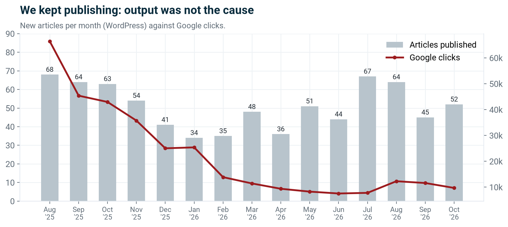
Publishing stayed steady at 34 to 68 new articles a month throughout the decline.
Not a penalty or removal
We appear for more searches (66 080 vs 57 372) and more pages (4 812 vs 4 092) than a year ago. Only about 3 000 of the lost clicks came from pages that dropped out of Google entirely.
Not a technical fault
The fall happened gradually, across months and across most pages. A site fault drops everything at once.
Not a mobile issue
Mobile fell 79% (101 179 to 21 247) and desktop 74% (43 286 to 11 463): both fell, by similar amounts.
Not a market shift abroad
South Africa supplies 96% of our search clicks and fell in line with the total (138 746 to 31 778).
Not our brand
People searching for "SME South Africa" by name fell far less (891 to 644 clicks, −28%) than everything else.
Not Discover going away
Google Discover sent a one-off 34 000 clicks in November 2025 and has sent almost nothing since March 2026. It was a bonus, never a base.
5. A note on the numbers
Why Google Analytics looks better than it is
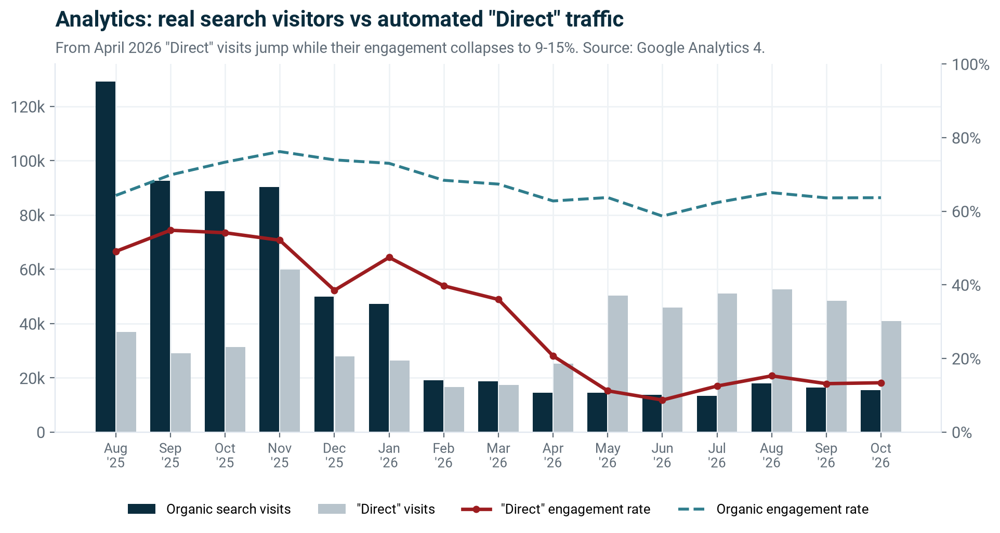
Total visits in Analytics hide the search decline. From April 2026 "Direct" visits rose from about 17 000 to 40 000 to 52 000 a month while their engagement rate fell from about 50% to 9% to 15%, with an average visit of 30 to 40 seconds. Only 29% to 33% of them come from South Africa; Singapore and the United States make up most of the rest. That is automated (bot) traffic, not readers.
Real search visitors behave the same as a year ago: organic engagement is steady at 59% to 76%. When we report traffic, we use Google Search Console and the organic channel, not total visits. Filtering the bot traffic out of Analytics is part of the plan below.
6. Evidence
Straight from Google Search Console
Screenshots of our Search Console account (web search, smesouthafrica.co.za), taken on 10 November 2026.
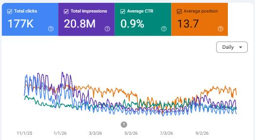
The 12 months under review (1 Nov 2025 to 31 Oct 2026): 177K clicks, 20.8 million impressions, 0.9% average click rate, average position 13.7. Lines: clicks (blue), impressions (purple), click rate (green), position (orange, higher is worse).
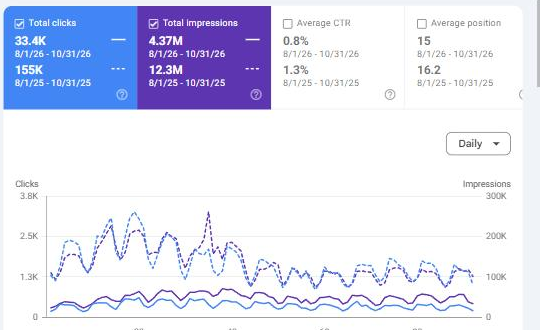
Like for like: August to October 2026 (solid) against August to October 2025 (dashed). Clicks 33.4K vs 155K (−78%), impressions 4.37M vs 12.3M (−64%), click rate 0.8% vs 1.3%. Average position is similar (15 vs 16.2) because we now appear for many more small searches; the big searches are where we fell.
Search Console keeps only 16 months of data (from 28 June 2025 for this account), which is why the long view in section 1 uses Google Analytics.
7. The response
What we have done and what comes next
Done so far
September 2026: diagnosed the decline and restored 30 guides whose content had been thinned out.
September 2026: repaired older articles (titles, descriptions, links and updated facts).
Result: the decline stopped. Exposure is up 58% to 78% from the June low, and our average position improved from about 21 to about 13. Clicks have not yet followed, because we are mostly in positions 4 to 10.
Next 90 days
1. Win back the top 50
Rework the 50 articles that hold half the loss, one at a time, in order of value: first-hand South African detail, current figures, and the quick answers Google now shows at the top.
Measure: top-3 positions for the main search term of each article.
2. Build what AI cannot answer
Content Google cannot summarise away: our own data, tools, funding desk outcomes, events, podcast and the community. People come for these by name, as the brand searches show.
Measure: brand and direct-to-tool visits.
3. Report clean numbers
Filter bot traffic out of Analytics, and track this page's live comparison monthly so recovery is visible against the same period last year.
Measure: one clean monthly traffic figure.
The honest outlook. The 81% caused by lost rankings can be won back article by article, and the top 50 pages are where to start. The 19% caused by AI answers will not come back; growth beyond that has to come from reasons to visit us directly.